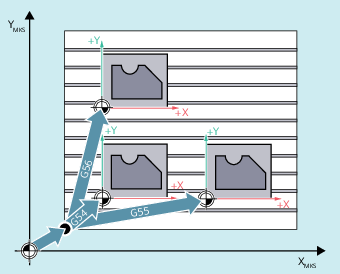

Über die Befehle G54 bis G57 und G505 bis G599 werden die über die Bedienoberfläche einstellbaren Nullpunktverschiebungen zur Verschiebung des Werkstückkoordinatensystems gegenüber dem Basisnullpunktsystem (BNS) aktiviert.
| Aufruf der 1. bis 4. einstellbaren Nullpunktverschiebung (NV) | |
| Aufruf der 5. bis 99. einstellbaren NV | |
| Ausschalten der aktuellen einstellbaren NV | |
G500=Nullframe: (Standardeinstellung; enthält keine Verschiebung, Drehung, Spiegelung oder Skalierung) | Ausschalten der einstellbaren NV bis zum nächsten Aufruf, Aktivierung des Gesamt-Basisframes ($P_ACTBFRAME). | |
G500 ungleich 0: | Aktivierung der ersten einstellbaren Nullpunktverschiebung ($P_UIFR[0]) und Aktivierung des Gesamt-Basisframes ($P_ACTBFRAME) bzw. ein evtl. geänderter Basisframe wird aktiviert. | |
| G53 unterdrückt satzweise einstellbare NV und programmierbare NV. | |
| G153 wirkt wie G53 und unterdrückt darüber hinaus den Gesamt-Basisframe. | |
| SUPA wirkt wie G153 und unterdrückt darüber hinaus:
| |
Drei Werkstücke, die auf einer Palette entsprechend der Nullpunktverschiebewerte G54 bis G56 angeordnet sind, sollen nacheinander bearbeitet werden. Die Bearbeitungsfolge ist im Unterprogramm L47 programmiert.
| Programmcode | Kommentar |
|---|---|
| N10 G0 G90 X10 Y10 F500 T1 | ; Anfahren |
| N20 G54 S1000 M3 | ; Aufruf der ersten NV, Spindel rechts |
| N30 L47 | ; Programmlauf als Unterprogramm |
| N40 G55 G0 Z200 | ; Aufruf der zweiten NV, Z über Hindernis |
| N50 L47 | ; Programmlauf als Unterprogramm |
| N60 G56 | ; Aufruf der dritten NV |
| N70 L47 | ; Programmlauf als Unterprogramm |
| N80 G53 X200 Y300 M30 | ; Nullpunktverschiebung unterdrücken, Programmende |
Siehe auch:
Einstellbare Nullpunktverschiebung (G54 ... G57, G505 ... G599, G53, G500, SUPA, G153): Weitere Informationen
Frame abwählen (G53, G153, SUPA, G500)